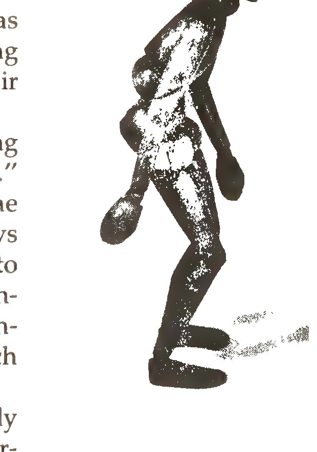
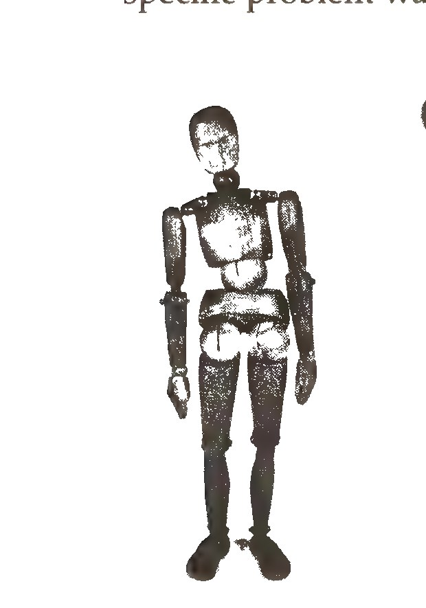
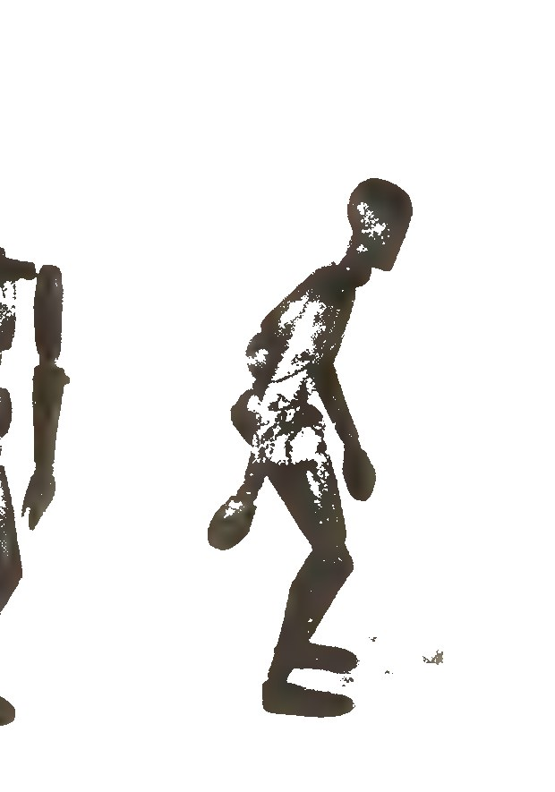

Chương 5 — Alexander (81 Tuổi): Los Viejitos
Vùng Tarascon ở tây nam Mexico nổi tiếng với điệu Danza de los Viejitos truyền thống — "Vũ điệu của những ông lão nhỏ". Những ông lão nhỏ, đội mũ vành phẳng trên những bộ râu trắng dài, đều cúi người về phía trước, tựa vào gậy. Họ mặc áo sơ mi trắng rộng và quần ống rộng của những người nông dân vùng đất quanh thành phố Patzcuaro.
Thực ra, bên trong những bộ trang phục tóc trắng và y phục trắng ấy là những cậu bé có đôi chân cực kỳ nhanh. Khi bản nhạc vừa cất lên, những "ông lão nhỏ" đứng bất động, trông như không thể nào đứng thẳng được. Rồi, dần dần, họ bắt đầu dịch chuyển cơ thể theo nhịp, đầu gối nhấc lên, chân lết đi, và trước khi bạn kịp nhận ra, họ đã nhảy một điệu quickstep nhỏ làm lóa mắt vì độ nhanh của nó. Rồi, đúng lúc bạn nghĩ họ đã chạm tới giới hạn, nhịp nhạc bỗng tăng gấp đôi đến mức phi thường, và những ông lão nhỏ nhảy dữ dội, chân tay mờ đi vì dập nhịp xuống mặt đất. Trong suốt tất cả những điều ấy, họ không hề ngừng cúi người tựa vào chiếc gậy đi bộ.
Người dân Tarascon biết đến huyền thoại về lão hóa và hình ảnh ông lão đi bằng "ba chân". Họ thể hiện một cái nhìn duyên dáng đầy thấu hiểu theo cách họ trình bày ý niệm rằng bên trong những viejitos này thực ra là những cậu bé đang chờ tiếng nhạc để thúc đẩy họ xuất hiện trở lại trong điệu nhảy vui tươi. Thật là một sự biến đổi tuyệt vời khi một thân thể già nua, dường như không thể cử động như tuổi trẻ, bỗng nhiên thể hiện sự nhanh nhẹn và tính linh hoạt đến thế!
Alexander là một người đàn ông 81 tuổi trông hoàn toàn giống một viejito: ông đi bằng gậy và cúi người về phía trước khoảng 50 độ so với phương thẳng đứng. Con trai ông đã đưa Alexander đến gặp tôi, báo trước rằng cha mình bị đau liên tục ở ngực và bụng. Ông bị khóa cứng trong độ cong 50 độ, đến mức khi ngủ ngửa ông phải kê ba chiếc gối lớn dưới đầu. Tư thế cực đoan này chính là hình ảnh của ông lão trong câu đố của Sphinx.

Hình 9: Tư thế của Alexander
Con trai Alexander nói với tôi rằng, xét theo tuổi của cha mình, anh không kỳ vọng có điều gì có thể thay đổi được tư thế cúi gằm ấy, nhưng anh hy vọng tôi có thể giảm bớt phần nào cơn đau mạn tính ở phía trước cơ thể Alexander. Ngoài tư thế ra, Alexander là một người nhanh nhẹn, cảnh giác cao độ, không than phiền gì ngoài cơn đau thường xuyên ở bụng và lưng dưới. Da dẻ ông tốt, ông ăn uống ngon miệng, quan tâm đến nhiều hoạt động, và nhìn chung ông khá khỏe mạnh.
Như tôi vẫn làm với mọi thân chủ, tôi quan sát Alexander kỹ từ mọi góc độ khi ông đứng cũng như khi đi. Tôi sờ các cơ ở thân mình ông để xác định điều gì đang gây ra biến dạng tư thế của ông. Cơ bụng của ông cứng và dai như da thuộc. Cơ bụng dài ấy kéo dài từ xương mu và đường bẹn lên tận giữa ngực, phủ hơn một nửa phía trước lồng ngực. Khi nó bị căng, nó kéo ngực xuống về phía xương mu. Khi nó căng đến mức cứng và dai như da thuộc, nó kéo toàn bộ thân mình về phía trước thành đường cong điển hình của một viejito. Các cơ liên sườn nhỏ giữa các xương sườn của Alexander cũng căng quá mức, ép thành ngực xuống, kéo đầu ông về phía trước, và làm biến dạng đường viền cổ ông thành hình dạng như của một con kên kên.
Như mọi vận động viên đều biết, những cơ được dùng quá mức sẽ đau nhức vào ngày hôm sau. Trong trường hợp của Alexander, các cơ ở bụng, ngực và cổ ông luôn được sử dụng, vì thế luôn đau nhức và mệt mỏi. Các cơ ở lưng ông cũng vậy, phải vật lộn để ngăn thân mình ông gục hoàn toàn. Vì Alexander không thể tự ý buông bỏ sự co cơ ấy, ông sống chung với đau đớn và mệt mỏi liên tục. Ông thức dậy thấy tràn đầy năng lượng, rồi trong vòng một vài giờ, ông lại mệt nhoài. Hơn nữa, sự co cơ mạn tính ở bụng và ngực đã giới hạn Alexander trong kiểu thở rất nông và tối thiểu. Lượng oxy hít vào không đủ để chuyển hóa thức ăn, và điều đó càng làm tăng thêm sự mệt mỏi thường xuyên của ông.
Bác sĩ của Alexander đã giải thích với ông rằng cảm giác yếu ở phía trước cơ thể là do teo cơ: theo như lời bác sĩ, các cơ ấy đang thoái hóa. Tuy nhiên, đây lại là điều ngược lại với những gì đang thực sự xảy ra: cơ bụng của Alexander chẳng yếu chút nào, mà trái lại cực kỳ mạnh. Chúng không thể không mạnh được, vì chúng phải làm việc liên tục.
Nhận ra rằng vấn đề của Alexander không phải do sự thoái hóa cấu trúc cơ thể mà là do rối loạn chức năng, tôi bắt đầu dạy ông cách vượt qua khó khăn căn bản của mình: chứng quên cảm giác–vận động (SMA) ở các cơ bị ảnh hưởng. Vì tôi không có ba chiếc gối nhồi đầy để cho ông nằm ngửa, tôi bảo ông nằm nghiêng. Ở tư thế nghiêng này, tôi không cố duỗi thẳng thân mình ông mà làm ngược lại: tôi làm ông thoải mái hơn bằng cách cong ông về phía trước gần 90 độ. Ông thấy thích điều đó. Tôi bắt đầu chỉ cho ông thấy tất cả các cơ thân mình ông đang làm gì khi ông cuộn người lại. Ban đầu ông không rõ tôi đang làm gì, nhưng dần dần ông bắt đầu nhận biết các vùng khác nhau ở phía trước cơ thể.
Tôi yêu cầu ông co cơ bụng mạnh hơn một chút so với mức chúng đã tự co ngoài ý thức. Ban đầu ông than rằng mình quá yếu để làm vậy, nhưng dần dần ông bắt đầu đạt được một mức độ co cơ có ý thức vừa phải. Khi làm được, ông nói: "Tôi không còn cảm thấy cơn đau ở bụng nữa."
Chúng tôi tập theo cách đó một lúc, rồi, để đo lường những thay đổi ông đã đạt được, tôi yêu cầu ông nằm ngửa. Ông phản đối, nói rằng sẽ không có đủ chỗ tựa cho phần thân trên và đầu. Tôi chỉ cho ông chiếc gối lớn mà tôi đã đặt trên bàn. Nó được nghiêng lên khoảng 30 độ so với mặt bàn. Ông nói nó quá thấp. Tôi bảo ông thử rồi sẽ thấy. Ông lật người lại và nhận ra mình có thể nằm với đầu tựa vào nó. Trong chưa đầy một giờ, ông đã duỗi thẳng thêm 20 độ!
Tôi dạy Alexander một số Bài tập Somatic để tập hai lần mỗi ngày, lúc đi ngủ và lúc thức dậy, rồi cho ông về. Tôi không gặp lại ông trong vài tuần, nhưng con trai ông báo tin rằng những cơn đau dữ dội ở bụng đã biến mất, giấc ngủ của ông tốt hơn nhiều, và ông tràn đầy năng lượng hơn hẳn. Ông không còn mệt mỏi vào giữa buổi sáng nữa.
Sáu tuần sau tôi gặp lại Alexander lần thứ hai, và trong buổi đó chúng tôi đạt được sự buông lỏng thêm nữa ở cơ bụng của ông, rồi bắt đầu làm tương tự với các cơ ở cổ. Khi, cuối buổi, ông nằm ngửa, đầu ông giờ hạ xuống mức 10 độ. Từ đó về sau, ông chỉ ngủ với một chiếc gối thay vì ba. Năng lượng và phạm vi hoạt động của ông cải thiện rất nhiều. Viejito đã bắt đầu nghe lại bản nhạc bên trong mình và đã bắt đầu nhảy.
Một thay đổi còn ý nghĩa hơn nữa đã xảy ra trong cuộc sống của Alexander: ông bớt lo âu. Suốt nhiều năm ông luôn thận trọng, hay cáu kỉnh và sợ hãi. Giờ đây, có lẽ vì không còn cảm thấy đau đớn liên tục, ông không còn bị làm phiền bởi những chuyện từng làm ông bận tâm. Hệ quả là, ông suy nghĩ và quyết định sáng suốt hơn. Vợ ông nói với tôi một điều căn bản hơn: ông dễ sống chung hơn nhiều — giống như thời trước khi ông nghỉ hưu.
Alexander từng là một trụ cột của ngành công nghiệp, với quyền lực và đặc quyền của vị trí đó. Một khi đã nghỉ hưu, ông không còn cảm thấy sự bất khả xâm phạm mà ông từng có suốt cuộc đời làm việc. Ông đã thay đổi hoàn toàn lối sống và điều chỉnh nền tảng kinh tế của cuộc sống mình. Thay vì hoạt động trong công việc của thế giới, ông trở nên thụ động. Thay vì độc lập, ông cảm thấy phụ thuộc vào những lực lượng khác. Nghỉ hưu là một thay đổi gây rất nhiều stress cho Alexander, và stress liên tục ấy đã biểu hiện ra ở mức cơ thể qua những cơn co cơ bụng. Những cơn co ấy làm hơi thở ông ngắn lại, kéo thân mình ông về phía trước, và khiến ông cảm thấy đau liên tục chồng lên sự lo âu liên tục.
Không phải tuổi già đã hành hạ Alexander; mà là chứng quên cảm giác–vận động (SMA) ngày càng tăng lên để đáp ứng với lối sống đã thay đổi triệt để của ông. Không phải lão hóa khiến con vật trong câu đố của Sphinx đi từ hai chân sang ba chân; mà chính là điều đã xảy ra với Barney, James, Louise và Harley — những tác động tiêu cực của stress và các chấn thương do tai nạn. Khi chứng quên cảm giác–vận động được tránh khỏi và phản ứng cơ bắp đối với stress và chấn thương được điều chỉnh, thì "tuổi già" biến mất. Từ những ông lão nhỏ của Tarascon hiện ra một tuổi trẻ bị che giấu, bắt đầu cử động theo những cách gây ngạc nhiên.
Tóm tắt: Những Gì Năm Bệnh Án Này Dạy Cho Chúng Ta
1. Những Vấn Đề Này Là Chức Năng, Không Phải Cấu Trúc.
Trong cả năm bệnh án, những vấn đề — thoạt nhìn có vẻ là những sự hỏng hóc không thể sửa chữa của cơ thể — thực ra lại là các rối loạn chức năng của hệ thần kinh. Nhìn từ bên ngoài, chúng dường như liên quan đến năm cơ thể đang thoái hóa; nhưng nhìn từ bên trong, đây là năm bộ não đã mất quyền kiểm soát các chức năng cơ thể mình.
Theo thuật ngữ của riêng tôi, đây là những vấn đề thuộc somatic — không phải vấn đề của thân thể. Đây là những vấn đề chức năng — không phải vấn đề cấu trúc. Đây là những vấn đề chỉ có thể do chính người bệnh giải quyết — không phải do bác sĩ. Đây là những vấn đề phản ánh sự mất kiểm soát từ bên trong hệ thống con người — chứ không phải sự xuống cấp của các bộ phận cơ thể ở bên ngoài hệ thống ấy.
2. Các Vấn Đề Chức Năng Là Những Trường Hợp Quên Cảm Giác–Vận Động.
Cả năm người này đều đang chịu đựng những vấn đề không thuộc y học. Họ nằm ngoài tầm với của sự trợ giúp y tế, mà họ đã cạn kiệt mọi dịch vụ của ngành này. Họ không mắc bệnh truyền nhiễm, không có tổn thương thể chất, cũng không bị mất cân bằng sinh hóa. Họ đang chịu đựng một sự mất trí nhớ: trí nhớ về cảm giác khi cử động một số cơ nhất định của cơ thể, và trí nhớ về cách thức cử động chính những cơ ấy.
Cụ thể hơn, sự mất trí nhớ của họ là chứng quên cảm giác–vận động (SMA). Tôi biết chắc chắn là như vậy, chỉ đơn giản vì việc được chỉ cho cảm nhận của một số kiểu co cơ nhất định, và cách các cơn co ấy được thực hiện, đã dẫn đến việc chấm dứt các vấn đề của họ. Họ giành lại chức năng bình thường và cảm giác khỏe mạnh bình thường của cơ thể mà không cần bất kỳ loại kháng sinh nào cho nhiễm trùng, phẫu thuật nào cho tổn thương, hay thuốc nào để điều chỉnh mất cân bằng sinh hóa.
3. Những Vấn Đề SMA Này Do Chất Lượng Vòng Đời Của Họ Gây Ra, Không Phải Số Lượng: Không Phải Số Năm, Mà Là Điều Đã Xảy Ra Trong Những Năm Đó.
Bản thân tuổi tác, xét về mặt sức khỏe, là trung tính. Tuổi tác chưa từng làm hại ai, cũng chưa từng giết chết một con người nào. Chính những gì xảy ra trong quá trình lão hóa mới làm hại và giết chết con người.
Mọi điều xảy ra với ta trong suốt cuộc đời đều gây ra một phản ứng tất yếu trong hệ thần kinh trung ương. Não bộ của ta đáp ứng và thích nghi với các sự kiện xảy ra. Nếu ta sống một cuộc đời bị giới hạn, chật hẹp, não ta sẽ thích nghi với điều đó. Nếu ta chịu đựng nhiều năm lo âu, sợ hãi và tuyệt vọng, não ta sẽ thích nghi với điều đó. Nếu ta gặp cú sốc, tai nạn thương tích, bệnh tật nghiêm trọng, hay phẫu thuật phức tạp, não ta sẽ đáp ứng và thích nghi với điều đó. Đây là những sự kiện mang lại chứng quên cảm giác–vận động, khiến ta tin rằng mình đang thoái hóa một cách bất lực. Mặt khác, nếu ta tận hưởng nhiều năm hài lòng, tự tin và hy vọng, não ta sẽ thích nghi với điều đó. Và với những hiệu ứng rất khác biệt.
Não là một cơ quan thích nghi. Nó đáp ứng với các sự kiện trong đời ta bằng bất cứ cách nào cần thiết để sinh tồn và tiếp tục tồn tại. Nhưng, vì não kiểm soát trực tiếp hoặc gián tiếp tất cả các chức năng cơ thể ta, điều này có nghĩa là toàn bộ cơ thể ta phản ánh những gì đã xảy ra với ta trong suốt cuộc đời.
Các rối loạn chức năng cơ thể trong cả năm bệnh án này rõ ràng phản ánh một sự thích nghi somatic bên trong đối với những sự kiện cụ thể đã xảy ra trong suốt cuộc đời ấy. SMA là kết quả đáng tiếc của những sự thích nghi cụ thể do hệ thần kinh trung ương thực hiện để đáp ứng với những gì xảy ra với ta trong cuộc sống. Phần 2 thảo luận về những sự thích nghi cụ thể này.
4. SMA Luôn Ảnh Hưởng Đến Toàn Bộ Hệ Thống Somatic Và Có Nguồn Gốc Ở Trung Tâm Cơ Thể Con Người.
Bất kỳ sự mất cân bằng nào trong hệ thống cảm giác–vận động cũng tạo ra sự mất cân bằng trong toàn bộ cơ thể. Khi các cơ ở một chi duy nhất trở nên co thắt, vụng về, hoặc quá mềm nhũn, sự mất kiểm soát và phối hợp hiệu quả này trong hệ cơ–xương gây ra một sự bù trừ tự động trong tất cả các bộ phận cơ thể khác có liên quan. Não bộ thực hiện những sự bù trừ này một cách tự động và ngoài ý thức, nhằm cố gắng tái cân bằng toàn bộ hệ thống.
Rõ ràng, sự tái cân bằng bù trừ này gây ra sự biến dạng các chức năng somatic bên trong và cấu trúc cơ thể bên ngoài. Toàn bộ hệ thống somatic rối loạn chức năng và trở nên lệch lạc. Vì não được lập trình di truyền để bảo vệ hệ thống somatic, nên nó tái cân bằng và bù trừ cho sự mất cân bằng ấy, nhưng giờ đây toàn bộ hệ thống đã trở nên kém hiệu quả, kém dẻo dai hơn, phản ứng chậm hơn, có thói quen tự gây stress cho mình, và vận hành với sự hao hụt đáng kể năng lượng. Đây chính xác là những triệu chứng của cái mà ta lầm tưởng là "tuổi già".
Nhưng SMA không chỉ luôn ảnh hưởng đến toàn bộ hệ thống somatic, mà còn có nguồn gốc ở trung tâm cơ thể con người: cụ thể là ở vùng thắt lưng, lưng dưới và bụng, nơi những cơ lớn và mạnh mẽ nối các đốt sống và lồng ngực với xương chậu. Vùng này là trung tâm trọng lực của cơ thể con người. Và chính là vùng nơi các triệu chứng của "tuổi già" đầu tiên xuất hiện.
Tóm lại, vì bất kỳ rối loạn cảm giác–vận động nào cũng ảnh hưởng không chỉ đến toàn bộ hệ thống somatic mà còn, đặc biệt, đến trung tâm trọng lực của cơ thể con người, nên hai vấn đề đồng thời và liên kết với nhau sẽ xảy ra. Trước hết, các rối loạn chức năng sẽ xảy ra ở các cơ tại trung tâm trọng lực, dẫn đến rối loạn chức năng trong cử động của (1) trung tâm cột sống–chậu; (2) các khớp vai và hông; (3) khuỷu tay và đầu gối; và (4) các vùng xa của cổ tay và bàn tay, mắt cá chân và bàn chân. Ngược lại, vấn đề kia là những chấn thương và rối loạn chức năng ở các vùng xa của cổ tay và bàn tay, mắt cá chân và bàn chân, khuỷu tay và đầu gối, khớp vai và hông, cùng cột sống sẽ gây rối loạn chức năng ở các cơ gần trung tâm trọng lực cột sống–chậu.
Hiện tượng này hiện rõ trong cả năm bệnh án. Trong cả năm trường hợp, các cơ ở trung tâm cơ thể đều tham gia một cách then chốt, bất kể vấn đề cụ thể ở các bộ phận ngoại vi của cơ thể là gì.

Hình 10

Hình 11

Hình 12

Hình 13

Hình 14
Vấn đề cụ thể ở hông của Barney là các cơ ở phía bên phải lưng ông bị co ngoài ý thức: toàn bộ lồng ngực bên phải bị kéo xuống về phía bên của xương chậu, gây ra tư thế nghiêng vẹo cột sống và cảm giác thăng bằng bị méo (xem Hình 10).
Vấn đề cụ thể ở lưng của James là các cơ cạnh cột sống lớn nối phần cột sống dưới và lồng ngực với xương chậu bị co ngoài ý thức: toàn bộ lồng ngực dưới bị kéo xuống thành đường cong như cái cung về phía sau xương chậu, cản trở cả việc đi lại lẫn động tác với tay của ông (xem Hình 11).
Vấn đề cụ thể ở vai của Louise là các cơ của đai vai vươn xuống phía bên phải thân mình bị co ngoài ý thức: toàn bộ khớp vai–cánh tay bị kéo xuống, phía trước và phía sau, về phía xương chậu trong một tư thế "đông cứng" (xem Hình 12).
Vấn đề cụ thể ở dáng đi khập khễnh và đầu gối cong của Harley là các cơ ở vùng thắt lưng bên trái của ông bị co kéo lên trên ngoài ý thức về chỗ bám của chúng ở lồng ngực và cột sống bên trái: toàn bộ hông và chân được giữ lên trên như bộ hạ cánh đã thu một nửa của máy bay (xem Hình 13).
Vấn đề cụ thể ở tư thế cúi gằm của Alexander là các cơ bụng nối ngực với xương mu và phần dưới của xương chậu bị co ngoài ý thức: toàn bộ thân mình ông bị kéo về phía trước và xuống dưới thành tư thế cúi gằm kinh điển của tuổi già (xem Hình 14).
Nhưng, trong cả năm trường hợp, vấn đề căn bản thực ra là như nhau: sự co cơ ngoài ý thức ở các cơ trong trung tâm trọng lực của cơ thể, ảnh hưởng đến ngoại vi của cơ thể; hoặc sự co cơ ngoài ý thức ở ngoại vi cơ thể, gây ra một cơn co bù trừ ở trung tâm trọng lực. Trong cả năm trường hợp, những cơ mạnh mẽ nối cột sống và lồng ngực với xương chậu chính là nguồn gốc của vấn đề cụ thể của mỗi người.
Hông của Barney, lưng của James, vai của Louise, dáng đi khập khễnh của Harley và tư thế cúi gằm của Alexander là những biểu hiện khác nhau của cùng một sự kiện: những cơn co cơ mạn tính ở trung tâm cơ thể, mà họ không thể cảm nhận cũng không thể kiểm soát, và có liên hệ trực tiếp với những cơn co mạn tính ở ngoại vi cơ thể.
Cuối cùng, cần nhớ rằng, trong cả năm bệnh án, chính nhờ trở nên có ý thức về cảm giác và các cử động tự nguyện ở trung tâm cơ thể mình mà những người này đã vượt qua được các cơn co phản xạ tự động và vô ý thức do SMA gây ra.
5. Nhìn Từ Bên Trong Và Theo Chức Năng, SMA Là Một Vấn Đề Somatic Duy Nhất; Nhìn Từ Bên Ngoài Và Theo Cấu Trúc, SMA Là Một Vô Số Vấn Đề Y Học Bí Ẩn.
Như tôi đã chỉ ra trước đó, tuổi tác không phải là nguyên nhân của bất cứ điều gì, dù lành mạnh hay không lành mạnh. "Tuổi tác" là một thuật ngữ trung tính, cũng như "sự sống": sống là già đi. Tuy nhiên, trong giới y học và trong nghiên cứu y học, chữ tuổi tác lại có một ý nghĩa bí ẩn. Dù theo định nghĩa, chữ này chẳng có ý nghĩa bệnh lý nào cả, nhưng trong cách dùng y khoa, nó lại mang ý nghĩa bệnh lý mạnh mẽ: nó là nguyên nhân bí ẩn, không rõ ràng của mọi triệu chứng bí ẩn ở người cao tuổi mà người ta không thể chẩn đoán hay điều trị hiệu quả. "Bác sĩ ơi, sao tôi không được giúp đỡ vậy?" "Ồ, ông không trẻ hơn được nữa đâu. Sau một thời gian, mọi thứ bắt đầu hỏng hóc. Đó đại loại là điều ông nên mong đợi ở tuổi của mình."
Đây, dĩ nhiên, là vô nghĩa. Tuổi tác chẳng liên quan gì đến hàng trăm vấn đề mà người ta đổ lỗi cho nó. "Tuổi tác" là một bệnh lý ngụy trang. Đằng sau sự bí ẩn là sự thiếu hiểu biết, mà phần lớn là sự thiếu hiểu biết về tình trạng somatic của chứng quên cảm giác–vận động.
Năm bệnh án này là nguyên mẫu của hàng triệu bệnh án và của những triệu chứng điển hình xảy ra khắp nơi trên thế giới mỗi ngày. Trong suốt 12 năm, tôi đã ghi chép lại một số than phiền mà các thân chủ có khi họ lần đầu đến gặp tôi. Tất cả đều có liên hệ rõ ràng với các cơ trung tâm của cơ thể, và tất cả đều được giải quyết khi những cơ này không còn kìm hãm các vùng cơ thể khác mà chúng ảnh hưởng. Trong mọi trường hợp, SMA là vấn đề somatic duy nhất nằm ở nguồn gốc của vô số triệu chứng bí ẩn ấy.
Ngoài những cơn đau ở bàn chân, ngón chân, chân, mông, ngực, cánh tay, bàn tay, lưng, cổ và hàm, các thân chủ của tôi còn báo cáo những triệu chứng như đau thần kinh tọa ở chân, đầu gối sưng, giãn tĩnh mạch, mắt cá chân yếu dễ bị xoay quá mức, mắt cá chân cứng không xoay được, chuột rút ở chân, tê bì hoặc "kim châm" ở bàn tay, đau đầu do căng cơ mạn tính, ù tai, đau mắt, thở nông, táo bón, đi tiểu thường xuyên, co thắt niệu đạo, viêm khớp, và hạn chế cử động của đầu. Tất cả những than phiền của họ đều mang tính mạn tính, tất cả đều không đáp ứng với các phương pháp điều trị y khoa và cận y khoa, và tất cả đều được giải quyết khi SMA được dọn sạch.
Xin lưu ý rằng tôi không nói là tất cả họ đều đã được "chữa khỏi". Chữa khỏi là một thủ tục y học không có ý nghĩa gì đối với SMA. Chữa khỏi và điều trị là những gì được làm cho một người bệnh thụ động — một công trình kỹ thuật từ bên ngoài đi vào bên trong. Việc ghi nhớ lại cảm giác–vận động là một quá trình giáo dục, do chính người đó chủ động thực hiện — một thành tích somatic nội tại đi từ trong não bộ đến hệ thống cơ bắp.
Tất cả những than phiền kể trên đều là những gì các thân chủ cảm nhận và mô tả. Đó không phải là những gì bác sĩ và các chuyên gia y tế khác mô tả. Họ đã được các chuyên gia y khoa chẩn đoán là bị đau dây thần kinh, vẹo cột sống, gù lưng, ưỡn cột sống quá mức, viêm khớp, viêm bao hoạt dịch, viêm xương khớp, loãng xương, hẹp ống sống, gai xương, hội chứng ống cổ tay, đĩa đệm bị ép, đĩa đệm bị phình, đĩa đệm bị trượt, đĩa đệm bị thoát vị, đĩa đệm thoái hóa, đĩa đệm bị trật, rối loạn lo âu hóa thân, phản ứng dị ứng, chấn thương sau phẫu thuật, và, cuối cùng, "cơn đau không thể chẩn đoán".
Từ quan điểm y học, việc những than phiền, sau khi được chẩn đoán như vậy, vẫn tiếp diễn dù đã điều trị có nghĩa là chúng "không thể chữa khỏi" và do đó là lỗi của tuổi già. Nhưng, từ quan điểm somatic, đây mới chỉ là phần một của một cuộc điều tra gồm hai phần, phần thứ hai cho thấy chứng quên cảm giác–vận động — đặc biệt là ở các cơ trong trung tâm trọng lực của cơ thể — chính là nguyên nhân của những vấn đề chức năng này. Những vấn đề chức năng như vậy không thể được "chữa khỏi" bằng "điều trị"; nhưng chúng có thể được kiểm soát bằng cách học lại. May mắn thay, đó chính là điều đã xảy ra cho hàng ngàn người với những than phiền và chẩn đoán được liệt kê ở trên.